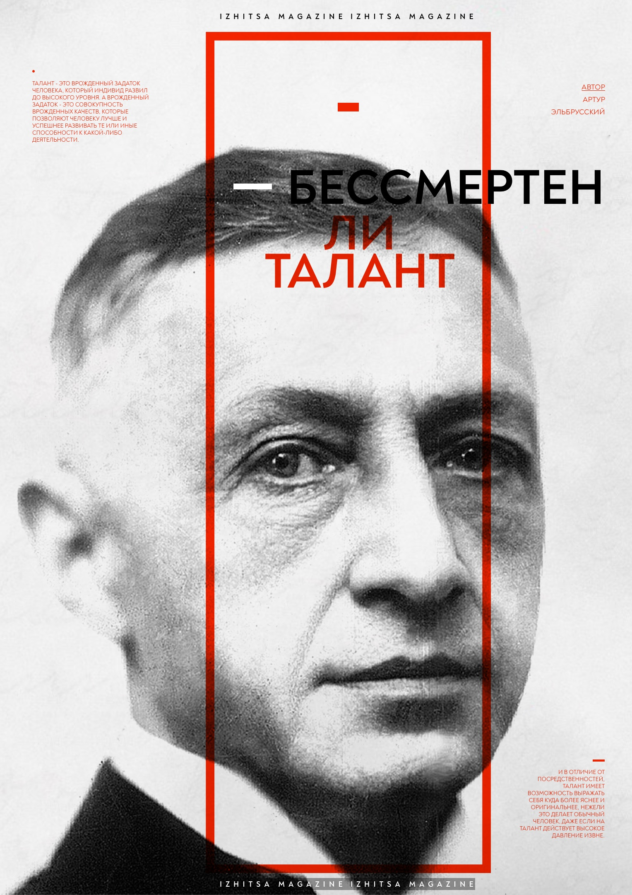

|

30 января • Артур Эльбрусский • Эссе
Бессмертен ли талант
Сравнивая культуру Российской Империи и СССР невольно спросишь себя: в чем причина появления талантов при одном режиме и их практически полное отсутствие в другом?
|
Миф или реальность
Важность античного мифа на сегодняшний день опустела. Стеклянные глаза незрячих толп не испытывают интереса к тому, что должно направлять, привносить некоторый смысл в лишенное рассудка существование современных офисных рабочих.
|
28 декабря • Кирилл Галин • Литература
От Лебовски до Достоевского
В продолжении обсуждения русской литературы, раскроем два вида конфликтов и покажем на примерах, насколько некоторые режиссеры близки к идеям русских классиков.
|
|
15 декабря • Артур Эльбрусский • История
Ложь, в которую верят все
В поисках материала я отправился туда, где свое начало имеют все легенды и байки советских фантастов, которые мы слышим до сих пор от старших и, кстати говоря, даже молодых поколений. Я посетил колыбель самых крупных мифов и фальсификаций, с которыми здравомыслящие люди борются до сих пор, а именно — архив газеты «Правда».
|
30 ноября • Кирилл Галин • Литература
Поэтика русской любви
Понятие любви находится в нескольких плоскостях, это и вызывает трудности для его определения. Никто не поспорит, что главное культурное достояние России - литература. Окунемся в мир рукописей и выясним, как русские классики видели «русскую любовь».
|
Манипуляция сознанием или как стать Гретой Тунберг. Теория Курта Левина
В эпоху гипперинформационного общества необходимо закалять иммунитет нашего мозга. Этого можно добиться, прыгая по персоналиям тех, кто непосредственно принимал участие в формировании такого общества. Сегодня речь пойдет о теоретике манипуляции массовым сознанием, психологе Курте Цадеке Левине.
|
|
1 ноября • Федор Достоевский • Эссе
Размышления о русском языке
Эта статья, по-существу, включает в себя две статьи Фёдора Михайловича Достоевского из его личного журнала «Дневник писателя»: «Русский или французский язык?» и «На каком языке говорить отцу отечества?». Обе статьи были выпущены журналом последовательно.
|
26 января • Георгий Двинский • История
Карл XII: Король-солдат
27 июня 1682 года, под воем ветра бушевавшей северной непогодой и нагнетающими тучами, в палатах замка Трёх Корон, король Швеции Карл XI написал следующие строки: «Семнадцатого в субботу без четверти 7 утра моя супруга разрешилась сыном. Хвала Господу Богу, который помог ей!» — родился будущий король-солдат, Северный Александр Македонский, а для кого-то призрак восставший из гуннских могил — будущий король Швеции Карл XII.
|
Izhitsa Mail
Вы можете подписаться на нашу почтовую рассылку, благодаря которой получите возможность всегда быть в курсе событий и нашего общества.
Подписаться |
Загрузить еще
Когда мы говорим о древности, первым делом надо сказать, что у нас есть два типа источников информации. Первый — это тексты, и второй — это материальные остатки, то есть вещи и контекст, в котором они были найдены. Текстами занимаются филология и история, которые работают рука об руку, и часто даже трудно сказать, исследователь древних текстов — кто он в большей мере, филолог или историк. А материальными остатками древних цивилизаций занимается археология. Изучение любой цивилизации, имевшей письменность, начинается с исследования созданных ею текстов. А потому начнем с текстов, которые дошли до нас из Античности. Какими же текстами мы обладаем для того, чтобы составить себе представление об античной культуре? Прежде всего, это разнообразные литературные сочинения, записанные повествования. Здесь надо сказать, что в Античности и в Средневековье долгое время различие между литературой и, скажем, наукой практически не делалось, или оно не было очень жестким. Например, многие научные сведения излагались в поэтической форме, в форме поэм, поэтому лучше говорить не о литературе и о науке, а скорее о словесности в целом. Греческая словесность возникает раньше, чем римская, и начинается она с поэтических произведений. Самые ранние произведения, которые дошли до нас, — это поэмы Гомера. Ученые долго спорили о том, кто такой Гомер и существовал ли такой человек в принципе. Но сегодня уже более или менее все согласны с тем, что вначале многочисленные поэмы о деяниях героев были устными и передавались от певца к певцу. Певцы эти назывались аэдами, но их имен мы, конечно, не знаем. Когда эти поэмы начали складываться, тоже неизвестно, но, видимо, еще во II тысячелетии до н. э. — поскольку именно тогда происходили некоторые упоминаемые в них события. Те же поэмы, которые мы знаем под именем «гомеровских», видимо, были созданы во второй половине VIII века до н. э., когда в Греции вошла в обиход письменность на основе этих древних преданий. Тогда же они были впервые записаны. Вот, например, так начинается поэма «Илиада»: Гнев, богиня, воспой Ахиллеса, Пелеева сына, Грозный, который ахеянам тысячи бедствий содеял, Многие души могучие славных героев низринул В мрачный Аид и самих распростер их в корысть плотоядным Птицам окрестным и псам (совершалася Зевсова воля)… В этих эпических поэмах излагаются различные события из жизни героев, которые были древними героями уже и в VIII веке до н. э., и мифологические сюжеты. Вслед за этими эпическими поэмами появились и другие жанры поэтических произведений. Более авторская лирика. А проза появилась гораздо позже — только в VI веке до н. э. Одними из самых ранних произведений были те, которые мы называем историческими, то есть рассказывающие о прошлом. Само слово «история» (historia) означает «исследование». И первый автор, которого принято называть «отцом истории», Геродот, занимался не систематическим изложением истории, а вопросом о взаимоотношениях между греческими и негреческими культурами, Греции и внешнего мира. Его произведения стали называть «историей», потому что это и было «исследованием». Вот фрагмент из четвертой книги «Истории» Геродота, где речь идет о земле, которую античные авторы называют Скифией: «Итак, области до этих лысых людей нам еще знакомы, о том же, что выше их, никто с точностью сказать не может. Эти страны отделяют высокие, недоступные горы, и никто их еще не переходил. По словам лысых, на горах обитают, хотя я этому не верю, козлоногие люди, а за этими горами — другие люди, которые спят шесть месяцев в году. Этому‑то я уж вовсе не верю». Впоследствии появилась довольно обширная литература самых разных жанров. Собственно, эта литература до нас дошла и является одним из главных источников наших сведений об Античности. Но далеко не всё, что было написано в Античности, дожило до наших дней. Например, в «Илиаде» и «Одиссее» речь идет о двух сравнительно небольших эпизодах из истории Троянской войны — и вполне вероятно, что эти две поэмы были частью большого несохранившегося цикла. Точно оценить, какая доля всей античной словесности до нас дошла, невозможно — но практически наверняка это считаные проценты, а может, даже доли процента. Почему это произошло? И как текстам, которые до нас все-таки дошли, удалось избежать общей участи? Рукописи недолговечны, даже при самых лучших условиях хранения они погибают, и нужно их время от времени переписывать. Составление одной копии требует больших затрат и времени, и сил. А поскольку копии были дороги, переписывались те тексты, которые пользовались спросом. Это похоже на современную систему print on demand : изготавливается ровно столько копий, сколько нужно для заказчика. Если человек желает иметь у себя какую-то рукопись, он заказывает ее копию, а так просто она не будет изготавливаться. Результатом был такой естественный отбор сочинений: выживали, продолжали свою жизнь в копиях те тексты, которые больше читались. Поэтому уже к середине античной эпохи, к эллинистическому времени встречаются упоминания о том, что такой-то текст, о котором пишут, что он существовал, сейчас потерян. Его копий нет. В древности создавались библиотеки, и было некоторое количество крупных библиотек, в которых собирались разные рукописи, в том числе и редкие. Самая известная — это Александрийская библиотека в Египте; были библиотеки и в других местах: в Пергаме, в Эфесе, в разных крупных центрах образования. Эти библиотеки содержали и редкие рукописи, а не только наиболее расхожие. Ну а самые расхожие — это, понятно, те тексты, которые использовались в школьном образовании. Поэтому у нас больше всего копий тех текстов, которые использовались в школе. К сожалению, в конце Античности и в раннее Средневековье все крупные библиотеки погибли. В Средневековье как в Западной Европе, так и в Восточной, в Греции например, в православных областях Византийской империи, рукописи сохранялись и переписывались в монастырях. При этом переписывались, естественно, тексты в первую очередь христианские, связанные с толкованием Ветхого и Нового Завета, но не только: переписывали и античные тексты, которые представляли интерес для средневековых ученых читателей. В результате тут тоже происходил отбор текстов, но уже по совсем другим принципам. Вкусы средневекового человека совсем не всегда совпадали со вкусами античного человека. Ну вот, например, был такой античный географ Страбон (I век до н. э. — I век н. э.). Он считается важным географом. В то же время в Античности он не пользовался никакой популярностью. Страбон составил компиляцию из отрывков сочинений своих более знаменитых и лучших предшественников и их пересказов, сделал из них такую вроде как хрестоматию, в которой куски разных текстов часто шиты практически белыми нитками. Вот как звучит типичный отрывок из «Географии» Страбона: «Ктесий утверждает, что Индия не меньше остальной Азии; по Онесикриту, она составляет третью часть обитаемого мира, а Неарх считает, что путешествие только по равнине занимает 4 месяца. Однако Мегасфен и Деимах более умеренны в своих расчетах, так как полагают расстояние от Южного моря до Кавказа „свыше 20 000 стадий“». Но для средневекового человека это было удобно, потому что представляло собой такую компактную энциклопедию географии. Поэтому в Средние века именно этот текст стал очень популярным, и именно его переписывали, — а те тексты, на которых основывался Страбон и которые на самом деле были лучше и в Античности были гораздо более знамениты, исчезли, и мы их не знаем. Античную географию мы знаем вот по этому тексту Страбона, который сохранился именно потому, что он был значим для средневековых людей. Ну или другой пример — латинский поэт Катулл, наверное самый знаменитый латинский лирический поэт, — существует масса его переводов на все языки, он сильно повлиял на новую европейскую поэзию и так далее. Вот одно из самых известных его стихотворений: И ненавижу ее и люблю. Почему же? — ты спросишь. Сам я не знаю, но так чувствую я, и томлюсь. Катулл не был очень популярен в Средневековье, хотя в Античности, конечно, был. И поэтому в Средние века его переписывали редко. В результате стихотворения Катулла до нас дошли в одной-единственной рукописи. Так что наши представления о словесности Античности очень неполные и часто, можно сказать, довольно случайные. С началом эпохи Возрождения возник огромный интерес к античной словесности. Гуманисты первыми стали подробно изучать библиотеки монастырей, в которых могли сохраниться тексты греческих и римских авторов, и публиковать свои находки. Этот интерес с тех пор не угасал, и уже к концу XIX века практически все, что можно было найти в библиотеках, было издано. Зато примерно в то же время возник новый, неожиданный источник текстов: оказалось, что в некоторых районах Египта, благодаря очень сухой почве, прекрасно сохранились многие древние материалы, и в том числе папирус. Папирус был наиболее распространенным в Античности писчим материалом, как сейчас бумага. Но он почти нигде не сохраняется, кроме Египта. Папирусы, на которых писались разные произведения, использовались в поздней Античности для изготовления так называемых картонажей — это такие погребальные саркофаги, которые изготовлены из многочисленных склеенных слоев папируса. Реставраторы их разбирают на отдельные папирусы, и это тоже такая довольно кропотливая работа. Подавляющее большинство текстов, которые сохранились на папирусах, — это деловые документы: письма, счета, расписки и так далее. Они тоже интересны, но для литературы они, естественно, ничего не дают. Но время от времени на папирусах встречаются и фрагменты текстов, которые в книгах до нас не дошли. Сегодня такие находки тоже иногда случаются, хотя уже не так часто, как сто лет назад. Например, три года назад были найдены тексты двух новых стихотворений Сапфо, одно из них — почти целиком. Вот его начало: Все щебечешь ты: вот Харакс вернется С полным трюмом груза! Но это только Зевсу и богам может быть известно, Будь же скромнее. Лучше повели мне теперь осыпать Многими мольбами царицу Геру, Чтобы воротился Харакс и судно Целым оставил, Чтобы невредимыми нас нашел он; Прочее — как будет богам угодно, Ибо наступает всегда затишье Следом за бурей. Эта находка стала сенсацией: до нее мы знали лишь одно стихотворение Сапфо целиком. Но ценность папирусов еще и в том, что тексты, которые на них написаны, не прошли через средневековую монастырскую цензуру. Они помогают понять, что люди читали в Античности. Хотя это отражает культуру только одного региона античного мира — Египта эллинистического и римского времени, — но эти данные более или менее можно экстраполировать и на остальные регионы. Гомер. Современная копия с оригинала эпохи эллинизма Museum für Abgüsse Klassischer Bildwerke; Wikimedia Commons Большая часть находок литературных текстов в папирусах повторяет то, что нам известно по рукописям. Самыми распространенными были тексты Гомера. Это подтверждает и то, что мы знаем из других источников: основой греческого образования было изучение поэм Гомера, и большая часть образованных греков знала наизусть очень значительную часть поэм. Поэтому они и переписывались для школы. Фукидид. Римская копия около 100 года н. э. с греческого оригинала начала IV века до н. э. Holkham Hall; Wikimedia Commons Среди других текстов сохранилось довольно много рукописей Фукидида, аттического историка V века до н. э., но подавляющее большинство сохранившихся в папирусах кусков текста относится к его первой книге. Их больше, чем фрагментов всех остальных книг. Это свидетельствует о том, что в школе изучалась именно первая книга Фукидида. Эта книга, которую называют также «Историей Пелопоннесской войны», посвящена войне между Афинами и Спартой в V веке до н. э. Сам Фукидид так описывает свой труд: «Мое исследование при отсутствии в нем всего баснословного, быть может, покажется малопривлекательным. Но если кто захочет исследовать достоверность прошлых и возможность будущих событий (могущих когда-нибудь повториться по свойству человеческой природы в том же или сходном виде), то для меня будет достаточно, если он сочтет мои изыскания полезными. Мой труд создан как достояние навеки, а не для минутного успеха у слушателей». На том, чтобы найти текст, работа историка не заканчивается — скорее, здесь она и начинается. Потому что дальше этот текст нужно грамотно проанализировать — а для этого первым делом нужно понять, кто, когда и зачем его написал и каким образом эти обстоятельства могли на него повлиять. И конечно, фрагментарность текстов, сохранившихся от Античности, усложняет эту задачу. Мы не можем и не должны верить всему, что написано в тексте. Любой текст отражает точку зрения автора, различные предрассудки и представления, которые существуют как в голове у него самого, так и у всего его поколения и окружения. И поэтому, если мы хотим восстановить реальную картину, нам нужно разные источники сопоставлять между собой. Для этого исторической наукой разработаны специальные методы. Стандартным способом выяснить, насколько достоверно то или иное сообщение, является его сопоставление с независимым сообщением. Собственно, этим занимается критика источников. Итак, мы поговорили о словесности. Но ею тексты, с которыми могут работать исследователи, конечно же, не исчерпываются. Существуют и другие виды письменных источников. Античное государство, как и любое другое, в процессе своей деятельности производило разные тексты нехудожественного характера, не относящиеся к словесности, — документы. В древности, как и в Новое время, такие тексты хранились в архивах, но древние архивы до нас не дошли. Зато в Античности существовало обыкновение наиболее важные документы высекать на камне. Например, постановления властей, законы, судебные документы, документы о тяжбах — то есть документы очень разного типа. Документы, написанные на твердых носителях — на камне и на металле, постоянно находят во время археологических раскопок. Подсчитано, что в Средиземноморье в результате раскопок в год находят около пяти тысяч новых текстов. Так что надписи дают нам постоянный приток нового материала, и это не оставляет античников без работы.